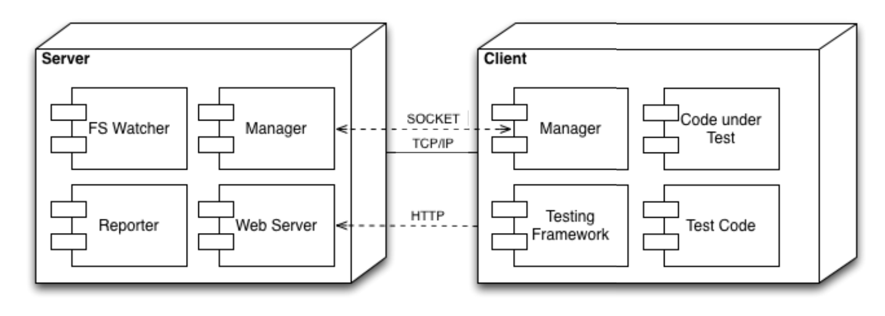
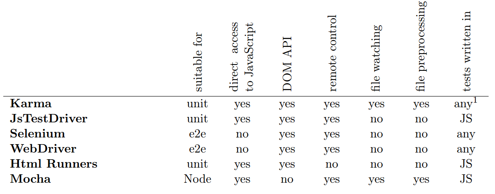

Why do we test?
- Confidence our code actually works
- Easier Refactoring
- Dont reproduce bugs
- Better design
- And lots more...
What tools do we have for testing?
- Jasmine
- QUnit
- JsTestRunner
- Mocha
- Selenium
- Karma
Introduction to Karma.js
Created by
The meaning of Karma?
What is Karma?
- Runner for JavaScript testing frameworks
- QUnit and Jasmine both have HTML test runners
- Karmas runner can be loaded on any device and browser
How did it all start?
Karma Objectives
- it('Should work with existing testing frameworks')
- it('Should be fast')
- it('Should allow multiple clients to connect')
- it('Should give instant feedback to the developer')
- it('Should be easy to setup')
Karma is solving a problem
Does it solve these issues?
Karma is Epic
- Brings productive testing to the developer
- Fast feedback from tests allows us to become creative and productive
How does Karma work?
Why use Karma?
What it offers in comparison?
Experiment
Get some images of tests
How does it fit with Angular.js?
Who uses Karma?


Future of Karma
Huge community! And growing every day
Further reading
http://karma-runner.github.io/Thesis
Pluralsight